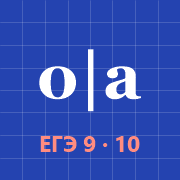
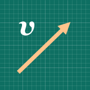

Мои тренажёры

Корни и приставкиЗадания 9 и 10 ЕГЭ по русскому
Немецкий A1Уроки, повторения и произношение

Тетрадь приёмовОлимпиадная физика
Добавь эту страницу на экран «Домой» (Safari → «Поделиться» → «На экран Домой») — получится одно приложение со всеми тренажёрами. Переключаться между ними можно кнопками вверху каждого тренажёра. Работает без интернета.